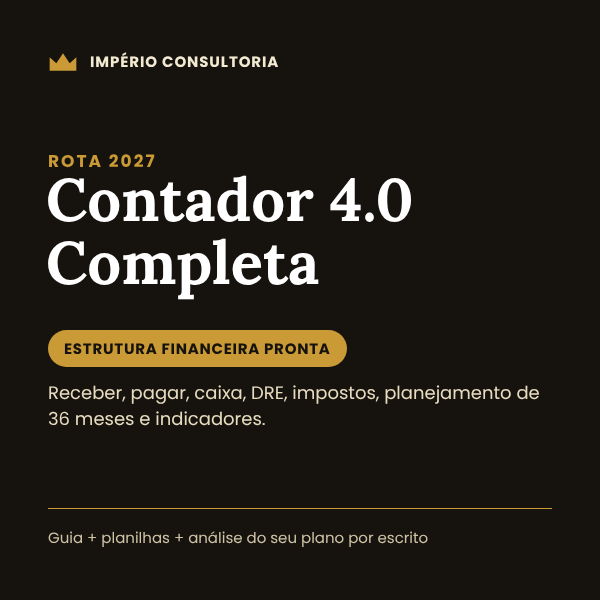

Tudo da Rota Contador 4.0 (guia em 5 fases e planilha de acompanhamento) mais uma estrutura financeira de empresa pronta para usar: contas a receber e a pagar, fluxo de caixa, DRE gerencial, estimativa de impostos, planejamento de 36 meses e indicadores.
Para contadores, estudantes de contabilidade e pequenos empresários que querem organizar a gestão financeira.

Excel avançado: Power Query, tabelas dinâmicas, PROCX; padronizar a conciliação bancária e de cartões.
Entrega: Conciliação que levava um dia rodando em minutos, com um extrato real (dados fictícios).
SQL básico (consultas, junções, agrupamentos) e Power BI (modelagem, DAX básico).
Entrega: Painel de DRE gerencial, fluxo de caixa e orçado x realizado publicado.
Uso de IA para classificar lançamentos, conferir notas e redigir relatórios; Python básico (pandas) para rotinas repetitivas.
Entrega: Rotina que classifica um extrato e aponta divergências, com o antes e depois documentado.
Custos e formação de preço, margem por produto/cliente, KPIs, orçamento e análise de variação; como apresentar para a diretoria.
Entrega: Relatório gerencial de 1 página + apresentação de 10 minutos de um caso.
LinkedIn reposicionado, portfólio, candidaturas para controller/controladoria e entrevistas de case.
Entrega: 3 casos no portfólio, perfil novo e 10 candidaturas por mês.
Cadastros, contas a receber e a pagar, fluxo de caixa realizado e previsto, DRE gerencial, estimativa de impostos (Simples, Presumido e Real) com calendário de obrigações.
Previsto x realizado, margens, ponto de equilíbrio, prazos médios, ciclo financeiro e inadimplência.
Como usar cada aba, rotina de controladoria e o passo a passo para montar o painel no Power BI.
Envie seu plano preenchido e receba uma análise por escrito em até 48 horas úteis.
Pagamento seguro pela Hotmart: Pix, boleto, cartão ou PayPal. O parcelamento tem juros da operadora.
Não. É uma ferramenta de gestão: não substitui a escrituração contábil nem a apuração oficial de impostos.
Não. Tudo funciona no Excel ou Google Planilhas; o roteiro de Power BI é opcional.
Depois da compra, envie o plano preenchido para contato@grupoimperio.tec.br com o assunto "Análise Completa". A resposta chega em até 48 horas úteis.
Você tem 7 dias de garantia: pede o reembolso direto na Hotmart.